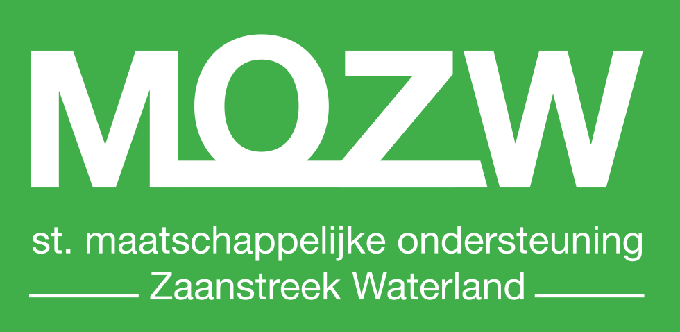

Stichting Maatschappelijke Ondersteuning Zaanstreek Waterland

Pas het thema aan!
*Het thema wordt behouden voor
uw volgende bezoek
Wie zijn wij?
De Stichting is opgericht op 13 juni 2013 door de partners Stichting Welsaen (‘Welsaen’) en Stichting Maatschappelijke Dienstverlening Zaanstreek Waterland (‘SMD’). De Stichting functioneert in de hoedanigheid van een Algemeen Nut Beogende Instelling (ANBI) op het gebied van welzijn in de regio Zaanstreek - Waterland.
Bestuur: Voorzitter: de heer M.J.F. Dupon
Secretaris/Penningmeester: de heer F. Beekman
Bestuurslid: mevrouw mr. M.E. Sluis